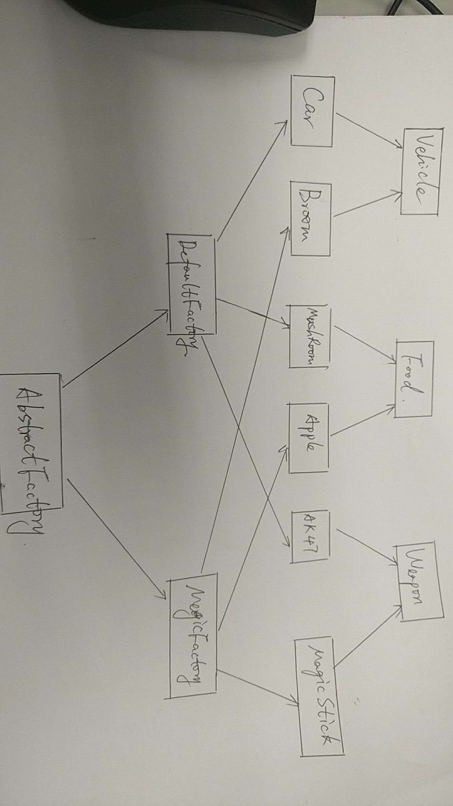

本文主要介绍静态工厂、简单工厂、抽象工厂和spring的bean工厂，另外还简单介绍了单例模式、多例模式。
第一课
我们先来实现一个需求，就是只给司机一辆车，不能多给。
为了实现这样的功能，我们这么设计我们的Car类：
这样就不能由用户来自己new一个Car，而是将Car的构造函数设置为private，然后在内部创建一个private的静态Car对象，这个就是单例模式，然后我们设置一个getInstance方法，来获取这唯一的Car对象，这个就是静态工厂模式。
写一个测试代码来验证一下它的唯一性：
运行：
OK。
上面提及的两种模式，一种叫做单例模式，另外一个叫做静态工厂模式。
其实还有一种多例模式，就是设置一组容器来存储不同的Car：
这第一个需求我们已经实现，现在我们来实现第二个需求：
任意定制交通工具的类型和生产过程。
这其实也算两个需求，我们先来实现任意定制交通工具的类型：
之前我们实现了一个Car的类，现在我们想不光开汽车，飞机也能开，这样，我们为了多态，要去实现一个接口，我们起名叫做Movable：
让Car来实现这个接口：public class Car implements Movable{
然后我们实现一个Plane类，也来实现这个接口：
好的，到目前为止，我们在测试类中就可以随意指定我们的交通工具了：
接下来，我们还想任意指定生产过程，不过这个不能着急，得一步步来。
我们先去设计一个飞机的生产过程出来：
生产：
这样是没问题的。但是如果想生产一个Car呢？
我们最朴素的想法是模仿PlaneFactory，写一个CarFactory：
上面需要注意的是，得把Car的构造函数设置为public，因为工厂模式和单例有冲突。
但是这样的话，整个测试用例代码也需要整体修改，很麻烦。
我们决定重新设计这个过程。
先设计一个VehicleFactory的抽象类：
然后我们去继承这个抽象类，实现两个工厂类：
PlaneFactory.java：
CarFactory.java：
这时测试类就可以这么写：
如果需要换其他的类的生产方式，只需要换成VehicleFactory factory = new XXXFactory();
我们将这个整体过程用图示来表示出来：
创建一个新的类，就需要创建一个对应的工厂，并且继承自VehicleFactory抽象类。
这个就叫做简单工厂模式
第二课
这一节我们介绍抽象工厂
设计一个抽象工厂，它是一个抽象类，可以生产交通工具，可以生产武器，还可以生产食物：
我们来定义这三种类，其实它们也都是抽象类：
Vehicle.java：
Weapon.java：
Food.java：
我们来实现两个Vehicle的具体类，两个Weapon的具体类，两个Food的具体类：
接下来我们从抽象工厂上继承实现两个工厂类，它们分别用相同的标准实现不同的一套物件：
DefaultFactory.java：
MagicFactory.java：
编写测试代码：
如果我们不想使用DefaultFactory的产品，就直接将工厂名换了即可：AbstractFactory f = new MagicFactory();
将抽象工厂的整体过程画出来就是：

第三课
对于简单工厂，我们能控制产品的扩展，但是如果产品多了以后，要产生产品系列的时候，容易产生工厂泛滥的情况。
但是抽象工厂模式，不会产生工厂泛滥的情况，但是产品不容易扩展。
我们这一次介绍一下Spring的bean工厂。
先创建一个Movable的接口：
然后从这个接口上实现两个类：
Car.java：
Train.java：
这一次我们写一个配置文件，需要用什么交通工具直接在配置文件上写好：
spring.properties：VehicleType=com.bjsxt.spring.factory.Car
写一个测试文件：
这一次我们就可以使用Car这样的交通工具了。
如果需要换交通工具，只需要改配置文件，不需要再去修改Test代码。
第四课
这一节我们入门一下spring，下载好spring的包并解压到电脑一个具体的位置：
创建一个project叫做Spring，加入我们需要的支持spring的jar包：
另外还需要加入一个日志的jar包：
把上一个项目的一些类复制过来：
Movable.java：
Car.java：
Train.java：
参考spring的文档，创建一个applicationContext.xml的配置文件：
这样就相当于和上一个项目达到相同的效果。
然后修改Test代码：
先通过配置文件拿到工厂，然后通过工厂获取交通工具，这种编程方式叫IOC，也就是面向切面编程，或者叫面向抽象编程，我们因为具体的实现全在配置文件里。
Spring我们已经有了一个基本的认识，下面我们来模拟Spring。
还是回到最初我们的Factory项目，将在Spring的配置文件拷贝过来（applicationContext.xml）：
如何从这个xml文档中读取信息呢？
这个可以到网上进行搜索：
发现有四种解析xml的方式，这里我们采用jdom的方式来处理xml。
关于jdom，ibm写过一篇教程：
https://www.ibm.com/developerworks/cn/xml/x-jdom/index.html
直接参考这个文档学习即可。
下面我们直接下载jdom的压缩包进行解压：
然后创建一个名字叫JDOM的project，在project里面加入需要的jar包：
再引入另外一个需要的jar包：
在ibm的介绍文档中有一个小例子：
我们就把这个例子复制到我们的工程里面并进行修改：
然后我们把例子里面给出的sample.xml也复制过来：
运行：
发现java程序是可以解析xml文件并取到其中的元素的。
那我们就可以在我们模拟Spring的项目中使用这样的技术来解析xml文件中的元素。
先创建一个BeanFactory，就是bean工厂：
再实现这个接口，设计一个ClassPathXmlApplicationContext类，内容在上面Sample2的基础上进行修改：
写一段测试代码：
运行发现，可以取到我们的applicationContext.xml中bean节点的数量和bean的具体信息：
下面我们就顺着这个思路，完善ClassPathXmlApplicationContext代码，增加一个Map来存储bean的id和对应的对象：
通过getBean方法，我们就可以用id号来找到我们想要的Object对象。
我们通过测试代码来创建我们想要的交通工具：
运行：
OK了！
如此看来，Spring就是一个容器，里面存储着我们想要的对象，我们需要时候可以直接帮我们生成。